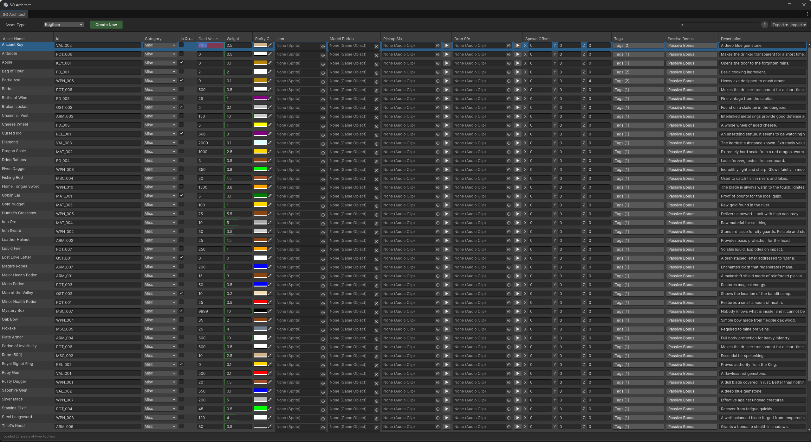
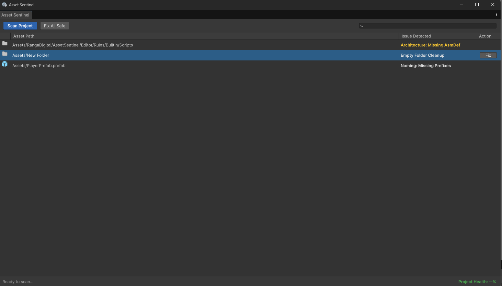

About Ranga Digital
At Ranga Digital we specialize in creating professional-grade editor extensions and data-driven architectural tools. Our focus is on maximizing developer productivity by bridging the gap between technical complexity and designer-friendly workflows.
We believe in high-performance tools that provide instant visual feedback, ensuring game databases remain clean, balanced, and error-free throughout the production lifecycle.
ScriptableObject Architect
The spreadsheet editor Unity forgot to include. Manage your game database in one high-performance view.


⚡ Spreadsheet Workflow
Forget the Inspector. View, edit, and compare thousands of ScriptableObjects in a single grid.
🔍 Advanced Query Engine
Find exactly what you need with syntax like gold > 500 or weight <= 10.5.
🛡️ Visual Validation
Never ship broken data. Cells turn Red instantly when C# data rules are violated.
🚀 Batch Operations
Rename 100 assets via smart patterns, duplicate rows, or export to CSV/JSON.
📖 Open User Manual & Technical Documentation
Loading...
Asset Sentinel
Lightweight Asset Validation & Compliance. Keep your project clean with zero domain-reload lag.


⚡ Asynchronous Scanning
Scan 1,000 assets in < 2 seconds. Uses C# Tasks to iterate through the AssetDatabase without freezing the Editor UI.
🔍 Search Integration
Utilize the Unity 6 Search bar to quickly "ping" non-compliant assets or open them directly in the Inspector.
🛡️ Automated Build Guard
Never ship broken builds. The Pre-process Build Guard blocks compilation automatically if critical errors are detected.
🚀 The "One-Click Fix"
Rules optionally implement an IFixable interface, allowing you to automatically resolve issues directly from the report window.
📖 Open User Manual & Technical Documentation
Loading...
Support & Contact
Need technical help or have a feature request? Reach out via the form below.